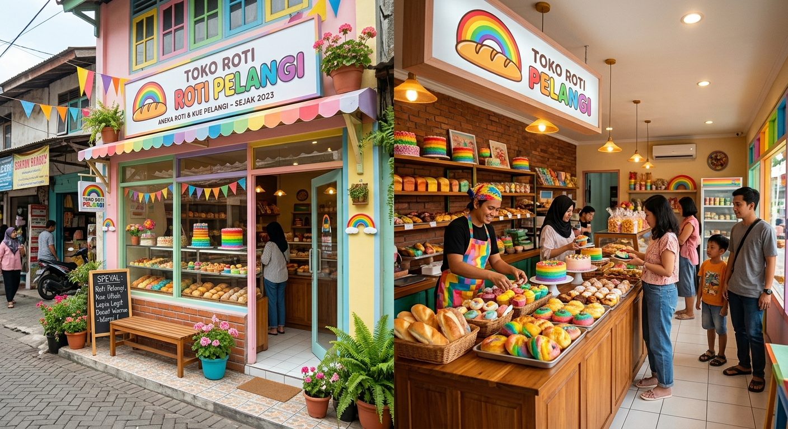
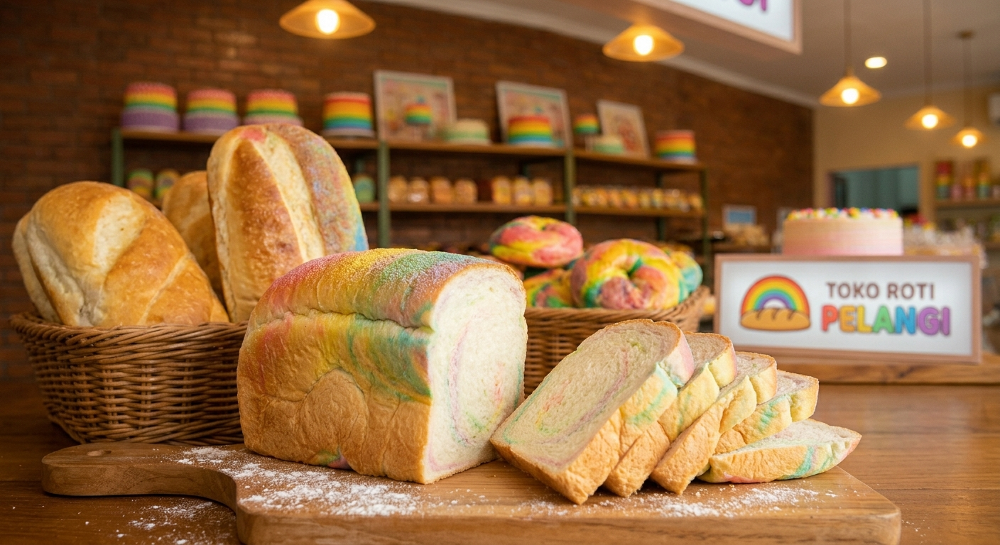

Selamat Datang

Toko Roti Pelangi adalah toko roti keluarga di Bekasi, Jawa Barat. Setiap pagi kami memanggang roti, kue, dan pastry dengan bahan segar pilihan supaya pelanggan bisa menikmatinya selagi hangat.
Sejarah Kami
Toko ini dibuka pada 2012 oleh Ibu Sari Wulandari di sebuah ruko kecil dengan satu oven dan tiga jenis roti. Resep rumahan dari sang nenek cepat dikenal tetangga, lalu pelanggan mulai datang dari berbagai kota.
Kini Roti Pelangi memiliki dapur produksi sendiri, 12 karyawan, dan lebih dari 40 varian roti serta kue yang tersedia setiap hari.

Visi dan Misi
Visi
Menjadi toko roti pilihan keluarga Indonesia yang membawa kebahagiaan di setiap gigitan.
Misi
- Memakai bahan segar tanpa pengawet.
- Memberi pelayanan ramah dan cepat.
- Terus berinovasi dengan rasa baru.
Tim Kami

Di balik setiap roti ada tim yang bekerja sejak subuh. Berikut daftar pegawai inti Toko Roti Pelangi.
| No | Nama | Jabatan | Bagian | Bergabung |
|---|---|---|---|---|
| 1 | Sari Wulandari | Pemilik | Manajemen | 2012 |
| 2 | Budi Santoso | Kepala Pastry | Dapur | 2013 |
| 3 | Rina Maharani | Dekorator Kue | Dapur | 2016 |
| 4 | Andi Pratama | Kasir | Penjualan | 2019 |
| 5 | Dewi Lestari | Admin Pesanan | Penjualan | 2021 |
| Total pegawai keseluruhan: 12 orang | ||||
Jam Operasional
| Hari | Jam Buka | Jam Tutup |
|---|---|---|
| Senin - Jumat | 06.00 | 20.00 |
| Sabtu | 06.00 | 22.00 |
| Minggu | 07.00 | 21.00 |
Ingin melihat menu lengkap? Buka halaman Produk & Kontak.